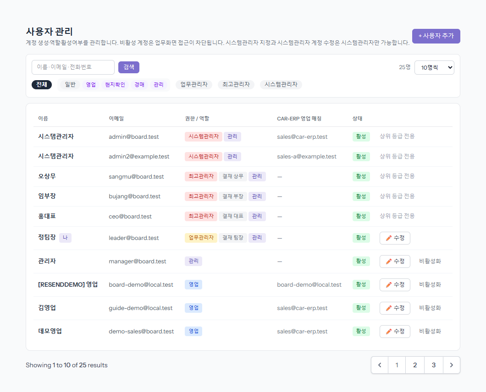
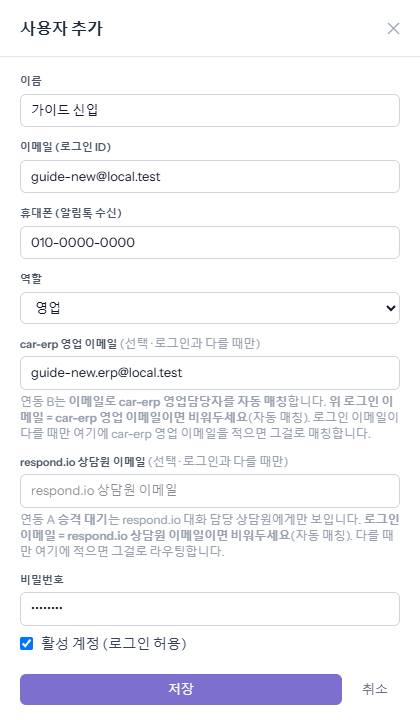
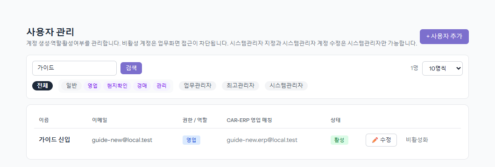
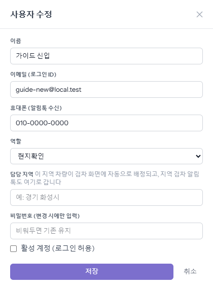
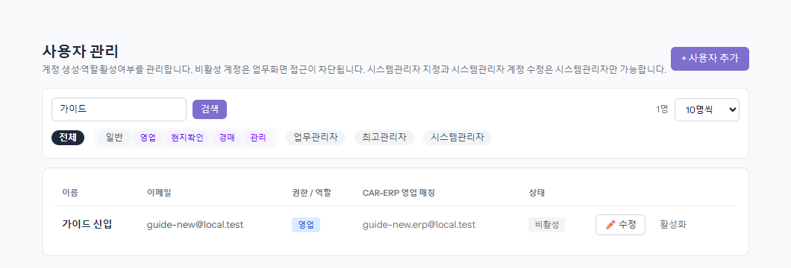

새 직원의 board 계정을 만들고, 역할을 정하고, 그만둔 사람은 막는 화면입니다. 왼쪽 메뉴 「사용자 관리」에서 엽니다.
관리·업무관리자 이상이 씁니다.
① 목록 보기
1단계
이름·이메일·전화번호로 찾고, 칩으로 거릅니다
검색칸에 적고 [검색](또는 Enter)을 누릅니다. 아래 칩(일반 — 영업·현지확인·경매·관리 / 업무관리자 / 최고관리자 / 시스템관리자)은 누르면 바로 걸러지고, 다시 누르면 풀립니다. 오른쪽에서 한 쪽에 몇 명씩 볼지 고릅니다.
나보다 높은 등급의 계정은 「상위 등급 전용」으로 나오고 고칠 수 없습니다.

② 새 계정 만들기
2단계
[+ 사용자 추가] → 칸을 채우고 [저장]
- 「이름」·「이메일 (로그인 ID)」 — 이 이메일로 로그인합니다.
- 「휴대폰 (알림톡 수신)」 — 클레임 결재 같은 알림톡이 이 번호로 갑니다. 비우면 알림톡이 안 갑니다.
- 「역할」 — 영업 / 현지확인 / 경매 / 관리. 역할에 따라 보이는 메뉴가 다릅니다.
- 「car-erp 영업 이메일」(영업만) — ERP 에 등록된 영업 이메일이 로그인 이메일과 다를 때만 적습니다. 같으면 비워 둡니다. 구매확정한 차가 ERP 로 넘어갈 때 담당 영업을 이 이메일로 찾고, 「내 정산·미수(포털)」도 이 이메일로 ERP 의 내 정보를 불러옵니다. 틀리면 포털이 비어 보입니다.
- 「respond.io 상담원 이메일」(영업만) — 상담 채팅 담당 이메일이 로그인과 다를 때만. 보통 비워 둡니다.
- 「비밀번호」 — 처음 비밀번호(6자 이상). 본인에게 따로 알려 줍니다.

3단계
저장하면 목록에 바로 나옵니다
「CAR-ERP 영업 매칭」 칸에 연결된 ERP 이메일이 보입니다. 「—」면 ERP 와 연결이 없는 계정입니다(영업이 아닌 계정은 보통 「—」).

4단계
현지확인(검차원)은 「담당 지역」을 정합니다
역할을 「현지확인」으로 고르면 「담당 지역」 칸이 생깁니다. 그 지역 차가 검차 화면에 자동으로 배정되고, 지역 검차 알림톡도 여기로 갑니다. 고칠 때 「비밀번호」를 비워 두면 기존 비밀번호가 그대로 남습니다.

③ 그만둔 사람 막기
5단계
[비활성화]를 누릅니다 — 계정은 지우지 않습니다
상태가 「비활성」으로 바뀌고 그 사람은 업무 화면에 들어올 수 없습니다. 그 사람이 등록한 차·기록은 그대로 남습니다. 다시 쓰게 하려면 [활성화]. 내 계정은 비활성화할 수 없습니다.
ERP 계정도 같이 막아야 합니다. ERP 사용자 관리에서 따로 처리합니다.

알아 둘 것
- 관리는 자기 역할을 바꿀 수 없습니다(사용자 관리를 스스로 잃지 않게).
- 영업 ↔ 관리로 역할을 바꾸면 「내 포털 공유」 연결이 자동으로 풀립니다. 필요하면 영업이 포털에서 다시 체크합니다.
- 등급(업무관리자·최고관리자·시스템관리자)과 업무일지 결재 직급은 시스템관리자·최고관리자만 정합니다. 그 칸은 그분들 화면에만 보입니다.